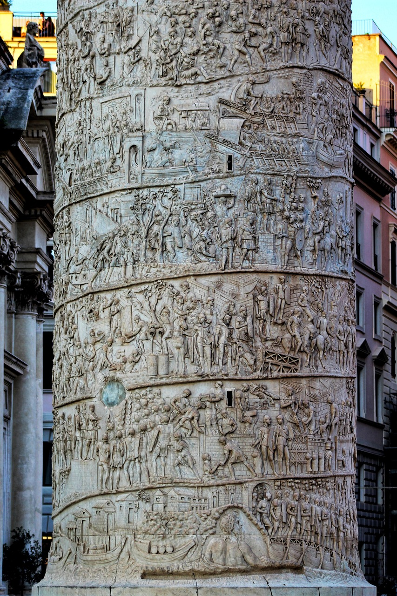

La Colonna Traiana è un monumento innalzato a Roma nel 113 d.C. per celebrare la conquista romana della Dacia da parte dell'imperatore Traiano. I momenti salienti della guerra sono rievocati nella sua decorazione scultorea. Fu un'opera di grande importanza nell'arte antica e divenne uno degli esempi più importanti del rilievo storico romano. Per la prima volta nell'arte romana si assiste a un'espressione artistica autonoma in ogni suo aspetto. La colonna è cava al suo interno, dove ospita una scala a chiocciola che permette di salire fino alla sommità della colonna. La funzione della scala era quella di permettere di raggiungere la sommità e ammirare il panorama circostante.
